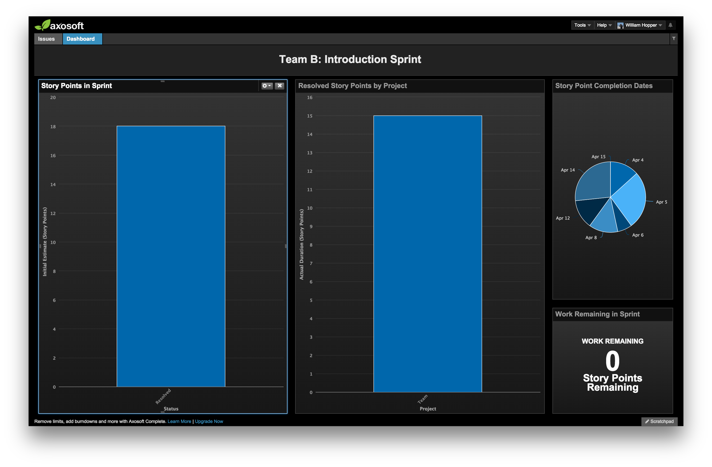

Introductory Sprint Report
Overview
This sprint encompassed our first few weeks as a team, and as such included work to establish team rules, workflows
and schedules. In addition, the team began work on researching software licenses - an important step in selecting a
project.
Other work included the creation of the team website and other infrastructure, which began before the start of the term.
Retrospective

As this was our first sprint and the team was still learning the process, there probably isn't too much to gain by looking at these numbers. There was no prior planning to make this a proper sprint, but in total the team did complete
18 story points, with
8 points rolling over into the next sprint. Rolled-over items of note are:
| Issue |
Notes |
| TEAM-156: Deliver Git Workshop |
Not a high priority since our project is still a few weeks out. There is stll some discussion on exactly what the Git workflow will look like. Max and Will will schedule a time in the next few weeks to finalize this workflow and deliver this workshop to the team. |
| TEAM-157: Investigate Travis CI |
Also not a high priority yet, as we don't have any code to test. Peter and Jason will pair on researching what it will take to get Travis setup on our GitHub repo once we have a project. This ticket will likely roll through the next few administrational sprints until we begin developing our product. |